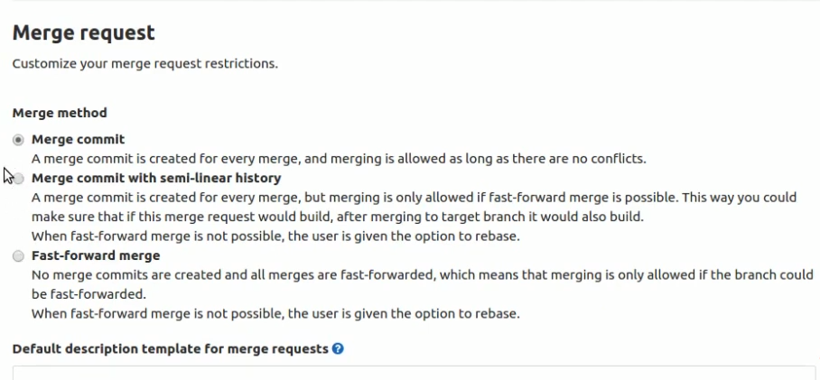
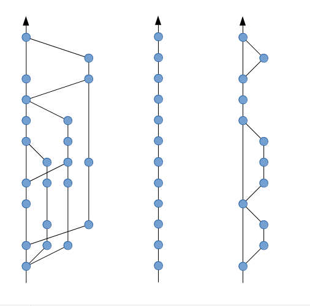

gitlab 仓库的 merge request 有三个配置选项：

选项 2 和选项 3 只是生成的 commit history 会不同
以下的三个图，分别对应上面的三个选项生成的 commit history

选项 1 为 gitlab 的默认选项，选项 2 和选项 3 一般会要求开发人员 rebase，在 gitlab 上做了 merge request 的 rebase 后，如果还需要进一部在本地编辑。如果在本地分支 git pull 后会产生一个新的 merge commit 并可能会产生冲突。这个问题可以如下解决：
git checkout this_other_branch
git stash // Just in case you have local changes that would be dropped if you dont stash them
git fetch
git reset —-hard origin/this_other_branch